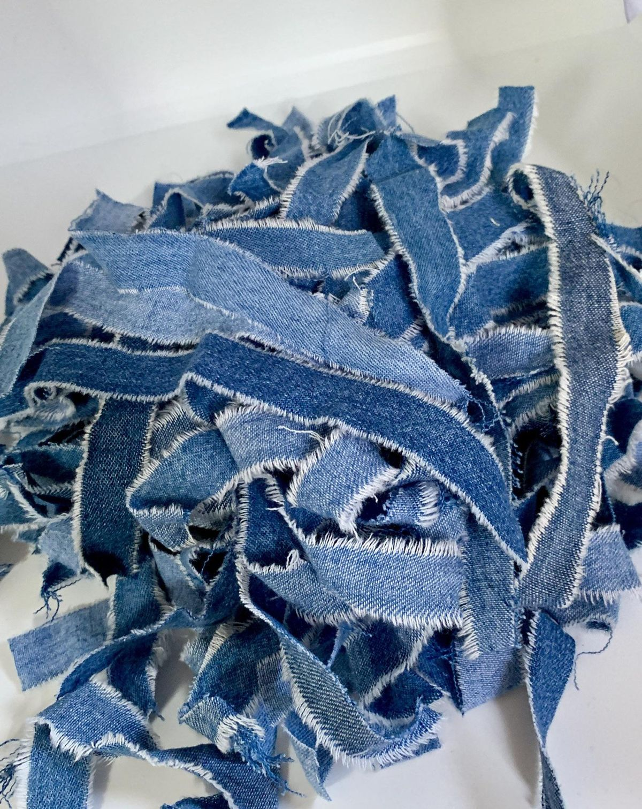
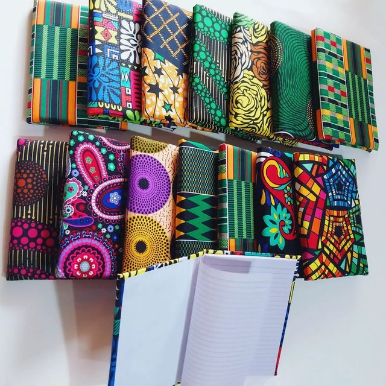

Our Sustainable Materials

Certified Organic
Nigerian Organic Cotton
Grown without synthetic pesticides or fertilizers, our cotton supports biodiversity and soil health. The fibers are longer and stronger, creating more durable fabrics.

Plant-Based
Natural Plant Dyes
Our vibrant colors come from plants like indigo leaves, onion skins, logwood, and annatto seeds. These dyes are biodegradable and safe for artisan workers.

Upcycled
Reclaimed & Recycled Fibers
We incorporate pre-consumer textile waste and post-consumer recycled cotton into our collections, giving new life to materials that would otherwise be discarded.

Compostable
Plant-Based Packaging
Our packaging is made from recycled paper and cornstarch-based bioplastics that break down completely in industrial composting facilities.